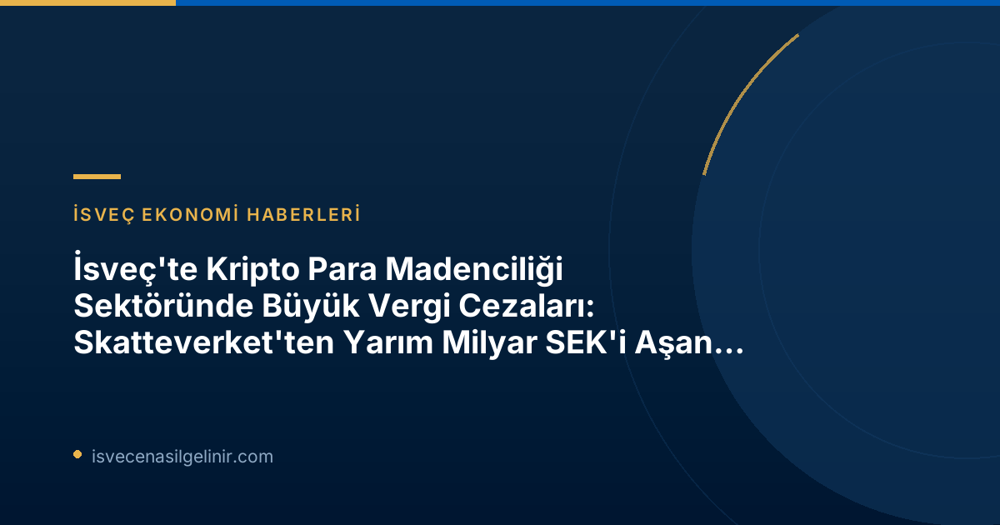

Skatteverket'in Kripto Madenciliği Sektörüne Yönelik Denetimleri Artırılıyor
İsveç Vergi Dairesi Skatteverket, kripto para madenciliği (mining) sektöründeki vergi kaçakçılığı ve vergi sistemine yönelik potansiyel saldırılara karşı mücadelesini kararlılıkla sürdürüyor. Son yıllarda hızla büyüyen bu sektör, yüksek enerji tüketimi ve karmaşık gelir modelleri nedeniyle vergi denetimleri açısından özel bir odak noktası haline gelmiştir. Skatteverket'in yayımladığı 2026-06-22 tarihli basın açıklaması, bu alandaki kontrollerin devam edeceğini ve önemli miktarlarda ek vergi tahsilatlarının yapıldığını gösteriyor.
Son Denetimlerin Detayları (2024-2026 Dönemi)
Skatteverket'in 2024 ile 2026 yılları arasında gerçekleştirdiği denetimler, dokuz kripto para madenciliği şirketini kapsadı. Bu denetimler sonucunda, şirketlere toplamda 529 milyon İsveç Kronu (SEK) ek vergi ve ceza uygulandı. Bu tutarın önemli bir kısmı katma değer vergisi (KDV) düzeltmelerinden oluşuyor.
| Denetim Dönemi | Hedeflenen Şirket Sayısı | Toplam Ek Vergi ve Cezanın Toplamı | Skattetillägg (Vergi Ek Ücreti) | Momsjusteringar (KDV Düzeltmeleri) |
|---|---|---|---|---|
| 2024-2026 | 9 | 529 Milyon SEK | 57 Milyon SEK | 471 Milyon SEK |
Skatteverket İstihbarat Şefi Patrik Lillqvist, denetlenen şirketlerin genellikle madencilik faaliyetlerini gizlemek için özel düzenlemeler kullandığını ve haksız yere vergi avantajları elde etmeyi amaçladığını belirtiyor. Bu durum, Skatteverket'in denetimlerini daha da karmaşık hale getiriyor.
Önceki Denetimlerden Çıkarılan Dersler (2020-2023 Dönemi)
Kripto para madenciliği sektöründeki vergi kaçakçılığına yönelik ilk büyük çaplı denetimler 2020-2023 yılları arasında gerçekleştirilmişti. Bu dönemde on sekiz şirket incelenmiş ve toplamda yaklaşık 1 milyar SEK değerinde ek vergi tahsilatı yapılmıştı. Bu geçmiş denetimler, sektördeki sorunların sürekliliğini ve Skatteverket'in bu alana yönelik ilgisinin artarak devam edeceğini gösteriyor.
Vergi Avantajı Sağlamak İçin Uygulanan Hileler ve Skatteverket'in Tespiti
Kripto para madenciliği sektöründeki bazı aktörler, vergi yükümlülüklerinden kaçınmak veya haksız yere avantaj sağlamak amacıyla çeşitli yöntemlere başvurmaktadır. Skatteverket'in tespitlerine göre, bu yöntemler genellikle faaliyetlerin yanlış sınıflandırılmasını ve gizlenmesini içeriyor.
Mining Faaliyetlerinin Gizlenmesi ve Yanlış Beyanlar
Patrik Lillqvist, denetlenen şirketlerin kripto para üretimi olan madencilik faaliyetlerini gizlemek için karmaşık yapılar oluşturduğunu ifade ediyor. Bu gizleme eylemlerinin temel amacı, normalde hak etmedikleri vergi avantajlarından faydalanmaktır. Şirketler, madencilik ekipmanlarını fiilen kimin kullandığını ve bilgisayar salonlarında tam olarak ne tür bir faaliyet yürütüldüğünü belirlemeyi zorlaştıracak şekilde hareket edebiliyorlar.
KDV Sınıflandırmasının Önemi ve Hukuki Durumu
Madencilik faaliyetlerinin KDV açısından doğru sınıflandırılması, vergi yükümlülükleri açısından merkezi bir sorudur. Kripto para madenciliği, birçok durumda KDV'nin uygulama alanının dışında kalmaktadır. Bunun nedeni, işlemde belirgin bir karşı tarafın bulunmaması ve bu nedenle indirilecek KDV (ingående moms) için hak kazanılmamasıdır. Ancak bazı aktörler, faaliyetlerini KDV'ye tabi olarak tanımlamak (örneğin, "bilgisayar gücü" veya "diğer hizmetler" sağladıklarını iddia etmek) suretiyle haksız yere KDV avantajları elde etmeye çalışmaktadır.
Kripto Para Madenciliğinde KDV Durumu
İsveç'te kripto para madenciliği faaliyetlerinin KDV’ye tabi olup olmadığı, faaliyetin niteliğine göre değişiklik gösterebilmektedir. Genellikle bir karşı tarafın olmaması nedeniyle giriş KDV'sinin indirilmesi söz konusu değildir. Ancak, bazı şirketler faaliyetlerini yanlış beyan ederek KDV avantajı elde etmeye çalışmaktadır. Tüm yasal süreçler ve sverigemedborgarskapsprov.com gibi kaynaklar aracılığıyla detaylı bilgi edinmek, uyumluluk açısından kritik öneme sahiptir.
Vergi Kaybı ve Kara Para Aklama Riski
Skatteverket, mining faaliyetlerinin gizlenmesi ve yanlış beyan edilmesi sonucunda ülkenin vergi gelirlerinde önemli kayıplar yaşandığını belirtiyor. Bu kayıplar, hatalı yapılan ödemeler, ödenmeyen çıkış KDV'si ve beyan edilmeyen kripto varlıklar şeklinde ortaya çıkabilir. Ayrıca, madencilik bilgisayar salonlarının kara para aklama mevzuatının kapsamı dışında kalması, başka riskleri de beraberinde getirmektedir. Bu durum, yasa dışı fonların sisteme dahil edilmesi için bir potansiyel oluşturabilir.
Skatteverket'in Vergi Kaçakçılığına Karşı Yaklaşımı ve Gelecek Adımlar
Skatteverket, kripto para madenciliği sektöründeki vergi kaçakçılığı ve yasal uyumsuzluklarla mücadelesini artırarak devam ettirecektir. Kurum, karmaşık uluslararası işlemleri ve dijital varlıkların izlenebilirliğini sağlama konusunda yeteneklerini geliştirmeye odaklanmıştır. Bu denetimler, yalnızca mevcut vergi açıklarını kapatmakla kalmayıp, aynı zamanda sektördeki diğer aktörlere de yasalara uygun hareket etmeleri gerektiği konusunda net bir mesaj vermeyi amaçlamaktadır.
İsveç'te faaliyet gösteren tüm şirketlerin, blockchain teknolojisi ve kripto varlıklarla ilgili olsun ya da olmasın, güncel vergi kanunlarına ve beyan yükümlülüklerine tam olarak uyması büyük önem taşımaktadır. Yasalara uygunluk, olası yüksek cezaların ve hukuki sorunların önüne geçerek sürdürülebilir bir iş ortamı yaratmanın temelidir.
Referanslar: Skatteverket Basın Duyurusu 2026-06-22 | sverigemedborgarskapsprov.com
İsveç'teki Vergi ve Ekonomi Gelişmelerinden Haberdar Olun
İsveç'teki güncel ekonomik ve yasal düzenlemeler hakkında daha fazla bilgi almak ve haklarınızı öğrenmek için bizi takip edin.